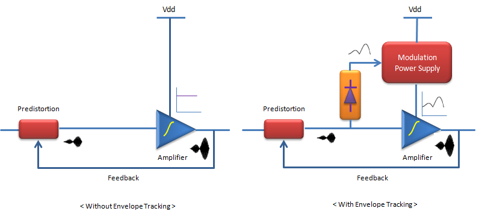

|
Envelop Tracking Home : www.sharetechnote.com |
|
The meaning of "Envelop Tracking" in relation to Amplifier is simple and straightfoward. It means 'continuosly figuring out/detecting the evelope of the signal. The important thing is "Why do we need it ?". The biggest motivation of the envelop tracking would be "to minimize the energy consumption to operate an amplifier" and this is especially important for mobile communication device. "Minimize the energy consumption" means "to provide the power in only the amount which is really needed by the amplifer". Using this technology wisely, we can also reduce the heat dissipated by the amplifier because the technology provide only the bare minimum energy and there are not so many engergy remaining to be dissipated as heat. What this mean is "If we have very well designed envelop tracking, we can solve the two biggest problems of all the power amplifier, i.e, energy consumption and heat dissipation".
It would be clearer if you compare the two cases with and without using this technology. These two cases can be illustrated as below.

The diagram shown on the left shows the case which does not use 'envelop tracking'. In this case, a constant power (Vdd) is supplied to the amplifier and this constant power is normally set to be the maximum power for the amplifier operation. But in reality, the amplifier does not always need the maximum power. In the case, when the amplifier does not need the maximum power, there is remaining power which is not used by the amplifier and is dissipated as heat.
The diagram show on the right shows the case which use 'evelop tracking'. In this diagram, you see two additional components which is not shown in previous case. The envelop dector(yellow) is the part that detects the envelop of the incoming signal and the modulation power supply is the part that can change the output of the power supply at very fast rate. In this system, the 'envelop detector' detects the envelop of the incoming signal and feed the value to the modulation power supply. This 'envelop' represents the amount of the energy that is required for the amplifier at that specific moment and with the detected envelop value, the power supply can supply the (almost) exact amount of the energy that is needed by the amplifier for a specific moment and this process is performed at very fast rate. In this way, this system can minimize the amount of the energy that is wasted by the amplifier.
Note : In the illustration shown above, you see a block labeled 'Predistortion', but I didn't explained anything about it because it is not the scope of this page. Refer to 'Predistortion' page if you want to know what it is.
Reference :
[2] WIDEBAND DYNAMIC BIASING OF POWER AMPLIFIERS FOR WIRELESS HANDHELD APPLICATIONS (Jau-Horng Chen)
|